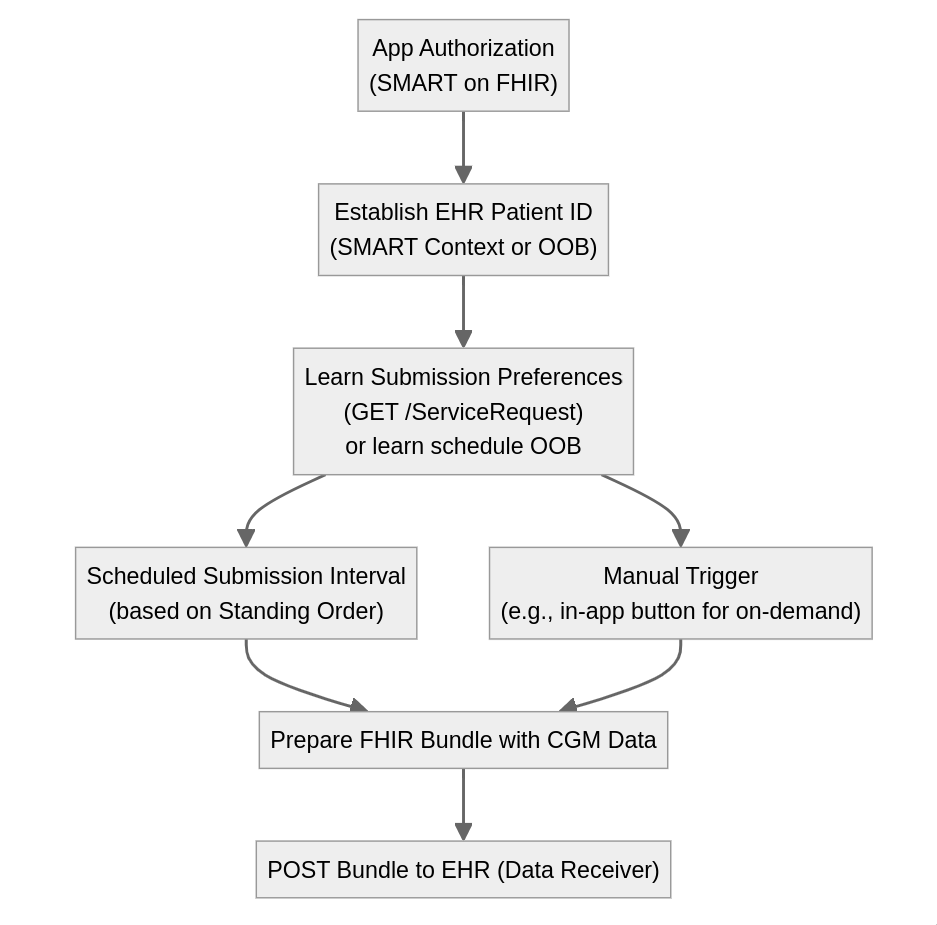

Argo CGM Write
0.1.0 - ci-build

Argo CGM Write
0.1.0 - ci-build

Argo CGM Write - Local Development build (v0.1.0) built by the FHIR (HL7® FHIR® Standard) Build Tools. See the Directory of published versions
| Official URL: http://argo.run/cgm/ImplementationGuide/fhir.argocgm | Version: 0.1.0 | |||
| Draft as of 2024-05-06 | Computable Name: ArgoCGM | |||
The Argo Continuous Glucose Monitoring Implementation Guide provides a standardized approach for sharing CGM data between actors. This IG focuses on enabling the exchange of CGM data, including high-level reports and raw glucose observations, to support collaborative glucose management.
Sarah, a type 1 diabetes patient, is switching to a new doctor. She has been using a CGM device and a patient app that stores her CGM data on her phone or in an app backend server. The app supports SMART on FHIR and is compatible with the Argo CGM IG. Sarah authorizes the app to connect with her new provider’s EHR, using her patient portal credentials to grant access to the phone app. The app then sends Sarah’s CGM reports from the past 3 months to the new provider’s EHR using FHIR, ensuring her new doctor has access to her recent CGM history for informed decision-making.
Dr. Johnson treats Michael, a type 2 diabetes patient struggling with glucose management. Dr. Johnson’s practice uses “CloudCGM”, a (fictional) cloud-based diabetes management platform that supports the Argo CGM IG. Michael has a patient account in the CloudCGM platform, and a “Sharing Code” appears in his account settings. During a clinic visit, Dr. Johnson launches the CloudCGM SMART on FHIR app inside of his EHR, entering the sharing code as Michael reads it to him. This process establishes a linkage between Michael’s records in the two systems. CloudCGM is now able to submit data every week into Dr. Johnson’s EHR, with results appearing in the native interface and easily incorporated into visit notes.
Dr. Patel is the principal investigator for a longitudinal research study. Participants are recruited from multiple diabetes management platforms that support the Argo CGM IG. The study protocol allows participants to share CGM data after completing an informed consent process. For consented participants, the diabetes management platforms submit a weekly data feed to a study server under Dr. Patel’s control. The standardized format and exchange protocols enable an efficient, multi-platform study focused on collecting raw glucose readings as part of the data package.
The data submitter is a software system that manages CGM data. It typically incorporates a patient-facing app, and may also incorporate a clinician-facing EHR-integrated app and a cloud service.
This IG also refers to Data Submitters as “apps” or “diabetes management platforms”.
The data receiver is a software system that receives and stores the CGM data submitted by the data submitter.
This IG also refers to Data Receivers as “EHRs”.

App Authorization (SMART on FHIR): The Data Submitter completes a SMART App Launch or SMART Backend Services Authorization to securely access the EHR system.
Establish EHR Patient ID: After successful authorization, the Data Submitter determines the patient’s id within the EHR’s FHIR Server. This can be done through the SMART’s launch/patient context, through FHIR patient search, or using an out-of-band (OOB) process.
Learn Submission Preferences: The Data Submitter determines the EHR’s CGM data submission preferences by:
a. Querying the EHR FHIR server for a specific ServiceRequest resource that contains the CGM data submission standing order, or
b. Learning the submission schedule through an OOB process.
Submission Triggers: The Data Submitter determines when to submit data a. Scheduled Submission Interval: Based on the standing order obtained from the submission preferences, the Submitter initiates scheduled submissions of CGM data at the specified intervals. b. Manual Trigger: The Submitter may also support manual triggers, such as an in-app button, allowing users to initiate on-demand submissions of CGM data.
Prepare FHIR Bundle: When a submission is triggered (either scheduled or manual), the Data Submitter prepares a FHIR Bundle containing the relevant CGM data, conforming to the specified profiles and requirements.
POST Bundle to EHR: The Data Submitter issues a POST request to send the prepared FHIR Bundle to the EHR’s FHIR Base URL.
This workflow ensures that the Data Submitter is properly authorized, respects the EHR’s submission preferences, and securely transmits CGM data in a standardized format. The combination of scheduled submissions and manual triggers provides flexibility and ensures that the EHR receives up-to-date CGM data as needed.
In this workflow, a patient-facing app connects directly to the EHR using the SMART on FHIR capabilities of the EHR. The app acts as a SMART on FHIR client and goes through an OAuth process where the patient approves the app to access their EHR, granting write scopes. This ensures that both the patient and the source EHR system agree to allow the app to write data using an appropriate access token.
Technical Details
launch/patient: patient app will already know who the patient is, and only requires a corresponding ID from the EHRoffline_access: establish persistent access for long-term submissionspatient/Patient.r: it may still be desirable to cross-reference patient demographics, e.g. to confirm a matchpatient/ServiceRequest.rs?code=cgm-data-submission-standing-order: helps app learn the EHR’s data submission preferencespatient/DiagnosticReport.cu?category=laboratory: submit a summary reportpatient/Observation.cu?category=laboratory: submit a summary observation or sensor readingpatient/Device.cu: submit device details associated with a sensor readingFor provider-facing apps, the app can be integrated directly into the EHR’s user interface using the SMART on FHIR EHR launch workflow. This workflow is widely supported by EHRs and allows apps to run within the EHR’s screen real estate. The EHR-integrated app might represent a device manufacturer or an independent diabetes management platform. The app can retrieve the patient’s ID and demographics from the EHR in real-time using the FHIR US Core Patient API.
To correlate the patient with a data record in the app’s backend system, an in-brand or out-of-band process can be employed.
Examples include but are not limited to:
Technical Details
launch/patient at linkage timeoffline_accessuser/offline_accesssystem/offline_access because short-lived access tokens are available at any time via client credentials grant☛ See Data Profile for details
☛ See Example CGM Data Submission Bundle
Once a Data Submitter is connected to the EHR, it can write data by submitting a batch Bundle to the EHR FHIR sever’s / submission endpoint.
The submission bundle includes a Bundle.meta.tag value of cgm-data-submission-bundle to support ingestion workflows on servers with limited data ingestion capabilities. The tag has no impact on the meaning of the bundle, and can safely be ignored by servers that offer a general-purpose POST / endpoint.
The Bundle entry array includes any combination of
Technical Details
batch-response bundle SHALL provide a status code indicating whether the submission was accepted☛ See Data Profile for details
☛ See Example CHM Data Submission Order (“Send a summary every two weeks”)
The Data Receiver can expose a standing order indicating:
Guiding Data Submission
This standing order is modeled as a FHIR ServiceRequest resource, which
Data Submitters can query to guide their future submissions. The standing order specifyies the patient, the type of data to be submitted, and the desired frequency of submission.
DataSubmissionSchedule
The DataSubmissionSchedule extension contains:
submissionFrequency (1..1): A Timing element that specifies the frequency or schedule for data submission. It includes elements a frequency, period, periodUnit, and optionally maxFrequencey define the desired submission schedule.
submissionDataProfile (1..*): A list of canonical references to FHIR profiles that represent the types of data to be submitted according to the specified schedule.
Multiple DataSubmissionSchedule extensions can be included in a single DataSubmissionRequest resource if the Data Recipient prefers a different schedule for different data types.
It’s important to note that submissions can also be manually triggered by a patient or provider within an app. For example, if there is an upcoming appointment, the provider can click a button to manually trigger submission of the most up-to-date results. Out-of-band communication between the app developer and the clinical provider system can also be used to establish preferred submission schedules.
Technical Details
The Data Submission protocol defined above enables standardized integration between CGM data sources and receiving systems like EHRs. However, there are situations where tight integration is not feasible or desired. SMART Health Links (SHLinks) provide a complementary method for sharing CGM data and reports among patients, caregivers, clinicians, and other authorized parties. SHLinks allow users to easily share selected subsets of CGM data as needed, offering an always up-to-date data feed without the need for direct system integration between the sharing parties. Specific scenarios where SHLinks provide value include:
By defining a tightly-orchestrated Data Submission API as well as a more loosely-coupled SHLinks capability, this IG ensures comprehensive interoperability that accommodates diverse real-world requirements across the CGM data sharing landscape.
SHLink Creator: A system that can generate SHLinks containing CGM data and reports, acting as a SHLink Sharing Application.
SHLink Receiver: A system that can receive and process SHLinks containing CGM data and reports, acting as a SHLink Receiving Application.
The SHLink Creator generates a SHLink containing the user-selected content, encrypted with a unique key.
The user shares the SHLink with the intended recipient(s), who use a SHLink Receiver to periodically access the shared data and stay up-to-date over time.
This IG aims to use LOINC codes for all Observations and DiagnosticReports. However, LOINC does not currently define codes for all required concepts. We have therefore established the following approach:
| Temporary Code | LOINC Code |
|---|---|
| cgm-summary | No LOINC Available |
| mean-glucose-mass | 97507-8 |
| mean-glucose-molar | No LOINC Available |
| times-in-ranges | No LOINC Available |
| time-in-very-low | No LOINC Available |
| time-in-low | No LOINC Available |
| time-in-target | 97510-2 |
| time-in-high | No LOINC Available |
| time-in-very-high | No LOINC Available |
| gmi | 97506-0 |
| cv | No LOINC Available |
| days-of-wear | No LOINC Available |
| sensor-active-percentage | No LOINC Available |